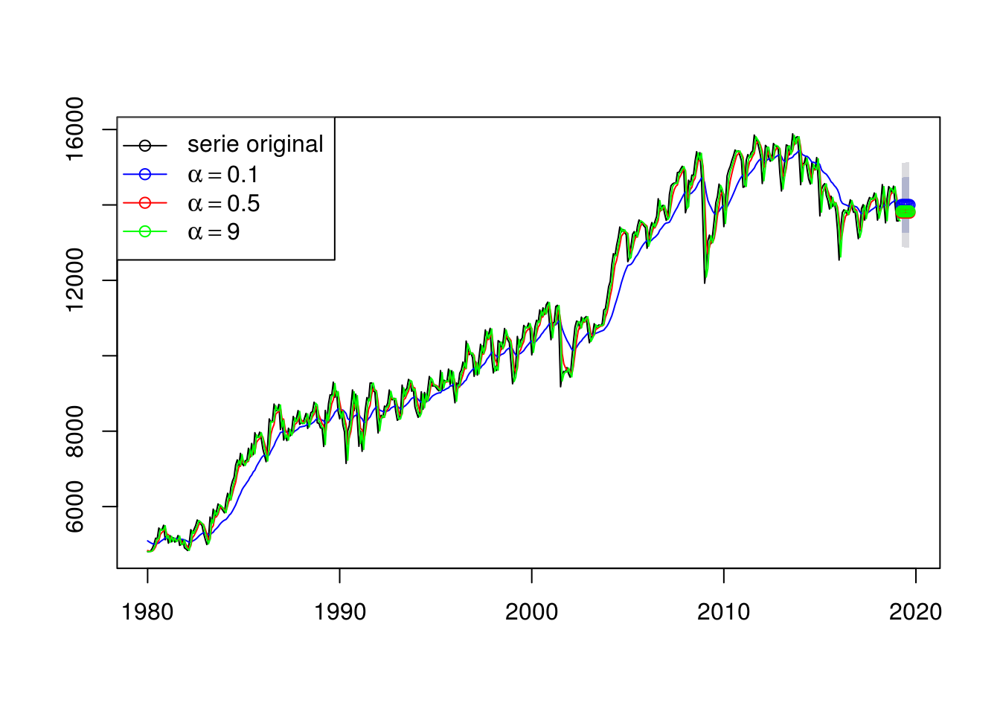
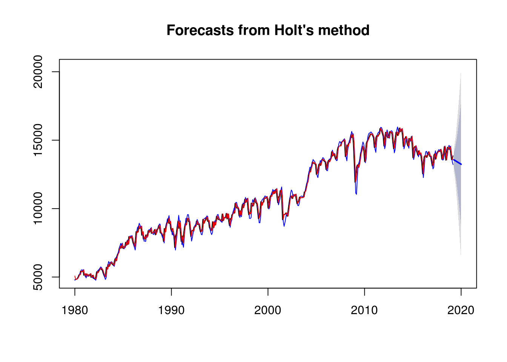
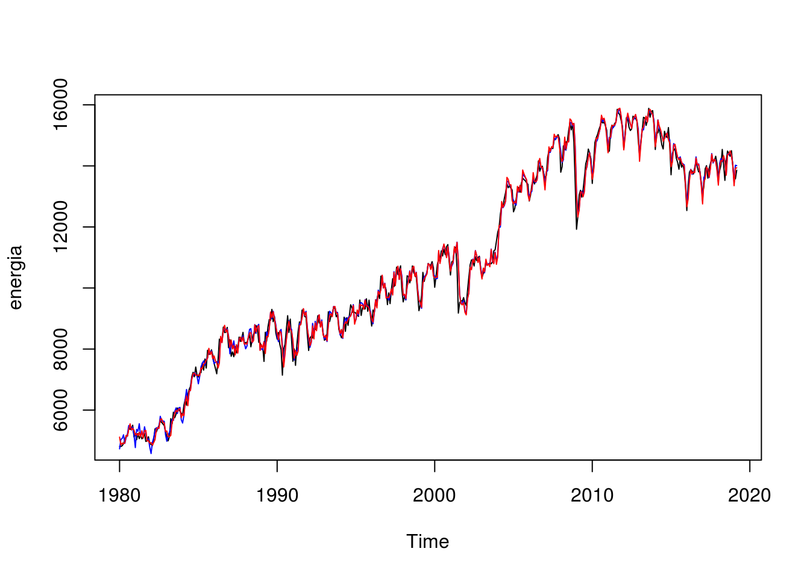
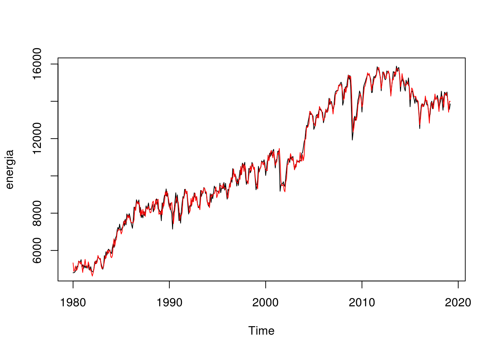

Capítulo 5 Suavização exponencial
Métodos de suavização exponencial produzem previsões a partir de médias ponderadas de observações passadas, onde o peso associado a cada observação cai a medida em que se recua mais no tempo. Ou seja, quanto mais recente a observação, maior será seu peso no modelo preditivo. Apesar de simples, é usado em larga escala nas mais diversas aplicações.
Para este capítulo, será usada como exemplo a série temporal da cotação do dólar, obtida com o pacote quantmod:
library(tidyverse)
library(forecast)
library(lubridate)
energia <- readRDS("data/ts_energia.Rda")5.1 Suavização simples
A suavização simples exponencial é considerada útil para séries sem tendência ou sazonalidade. No R, ela é implementada pela função forecast::ses()
Levando em conta que o modelo ingênuo (naive model) atribui peso 1 para a última observação e o modelo da média simples atribui peso igual para todas as observações passadas, a suavização simples poderia ser descrita como um meio termo entre ambos. Sua formulação matemática não é complexa:
\(\hat{y}_{T+1|T} = \alpha y_t + \alpha (1 - \alpha)y_{T-1} + \alpha (1 - \alpha)^2y_{T-2} + ...\)
O parâmetro \(\alpha\) é chamado de parâmetro de suavização e está definido no intervalo de 0 a 1. Por exemplo:
alpha <- 0.2
for (i in 1:5) print((1 - alpha)^i)## [1] 0.8
## [1] 0.64
## [1] 0.512
## [1] 0.4096
## [1] 0.32768alpha <- 0.8
for (i in 1:5) print((1 - alpha)^i)## [1] 0.2
## [1] 0.04
## [1] 0.008
## [1] 0.0016
## [1] 0.00032Percebe-se pelos resultados da simulação acima que quanto maior o parâmetro \(\alpha\), maior é o peso dado à observação imediatamente mais recente e menor o dado às demais.
O valor de \(\alpha\) pode ser “definido” subjetivamente, utilizando conhecimentos empíricos. Contudo, a maneira mais precisa de escolher esse valor é por meio de um algoritmo de otimização, que estimará \(\alpha\) a partir dos dados obtidos
Suponha que não façamos a mínima ideia do melhor valor de \(\alpha\) para a série temporal da cotação do dólar. Vamos testar três valores:
alpha1 <- ses(energia, alpha = 0.1, h = 6)
alpha2 <- ses(energia, alpha = 0.5, h = 6)
alpha3 <- ses(energia, alpha = 0.9, h = 6)
# calculando o erro de cada ajuste
list(alpha1, alpha2, alpha3) %>% map(accuracy)## [[1]]
## ME RMSE MAE MPE MAPE MASE
## Training set 189.1023 566.3227 452.3437 1.852651 4.394329 0.821636
## ACF1
## Training set 0.7750762
##
## [[2]]
## ME RMSE MAE MPE MAPE MASE
## Training set 38.04937 379.2963 279.4255 0.3436042 2.740185 0.5075478
## ACF1
## Training set 0.4246183
##
## [[3]]
## ME RMSE MAE MPE MAPE MASE
## Training set 21.28641 344.4563 257.3424 0.1862282 2.533822 0.4674361
## ACF1
## Training set 0.07787846plot(alpha1, plot.conf=FALSE, ylab = "", main="", fcol="white")
lines(fitted(alpha1), col="blue")
lines(fitted(alpha2), col="red")
lines(fitted(alpha3), col="green")
lines(alpha1$mean, col="blue", type="o")
lines(alpha2$mean, col="red", type="o")
lines(alpha3$mean, col="green", type="o")
legend("topleft",lty=1, col=c(1,"blue","red","green"),
c("serie original", expression(alpha == 0.1),
expression(alpha == 0.5),
expression(alpha == 9)),
pch=1)
# qual o valor otimo encontrado para alpha nesse caso?
ses(energia) %>% summary##
## Forecast method: Simple exponential smoothing
##
## Model Information:
## Simple exponential smoothing
##
## Call:
## ses(y = energia)
##
## Smoothing parameters:
## alpha = 0.9881
##
## Initial states:
## l = 4806.6943
##
## sigma: 344.0853
##
## AIC AICc BIC
## 8405.052 8405.103 8417.516
##
## Error measures:
## ME RMSE MAE MPE MAPE MASE
## Training set 19.44131 343.3539 259.5568 0.1690397 2.565129 0.4714584
## ACF1
## Training set -0.002095396
##
## Forecasts:
## Point Forecast Lo 80 Hi 80 Lo 95 Hi 95
## Apr 2019 13854.63 13413.67 14295.60 13180.24 14529.03
## May 2019 13854.63 13234.72 14474.55 12906.55 14802.72
## Jun 2019 13854.63 13096.91 14612.36 12695.79 15013.48
## Jul 2019 13854.63 12980.56 14728.70 12517.86 15191.41
## Aug 2019 13854.63 12877.98 14831.29 12360.97 15348.29
## Sep 2019 13854.63 12785.20 14924.07 12219.07 15490.20
## Oct 2019 13854.63 12699.84 15009.43 12088.53 15620.74
## Nov 2019 13854.63 12620.37 15088.90 11967.00 15742.27
## Dec 2019 13854.63 12545.72 15163.55 11852.83 15856.44
## Jan 2020 13854.63 12475.11 15234.16 11744.83 15964.44O valor de \(\alpha\) encontrado ffoi de 0,9999, praticamente um modelo ingênuo.
5.2 Linear de Holt
Holt criou uma extensão ao método de suavização simples que permite prever dados com tendência que possui dois parâmetros \(\alpha\) e \(\beta\). Matematicamente, temos:
\(\hat{y}_{t+h}=l_t + hT_t\)
\(l_t = \alpha y_t + (1 - \alpha)(l_{t-1} + T_{t-1})\)
\(T_t = \beta (l_t - l_{t-1}) + (1 - \beta)T_{t-1}\)
Onde \(T_t\) corresponde a uma estimativa do componente de tendência e \(l_t\) uma estimativa do componente de nível da série no período \(t\). Assim como \(\alpha\), o parâmetro \(\beta\) também está definido no intervalo [0,1].
Recomenda-se que \(l_0\) e \(T_0\) sejam inicializados como \(y_1\) e \(y_2 - y_1\), respectivamente.
No R, a função para aplicar o modelo linear de Holt é forecast::holt(). Os parâmetros podem ser impostos manualmente ou calculados automaticamente por otimização:
mod1 <- holt(energia, alpha = 0.6, beta = 0.4)
mod2 <- holt(energia)
mod2$model## Holt's method
##
## Call:
## holt(y = energia)
##
## Smoothing parameters:
## alpha = 0.9845
## beta = 1e-04
##
## Initial states:
## l = 5052.3993
## b = 19.8743
##
## sigma: 344.5037
##
## AIC AICc BIC
## 8408.184 8408.313 8428.958plot(mod1)
lines(fitted(mod1), col = "blue")
lines(fitted(mod2), col = "red")
# calculando a qualidade de ajuste
list(mod1, mod2) %>% map(accuracy)## [[1]]
## ME RMSE MAE MPE MAPE MASE
## Training set -0.3120712 423.4344 313.9757 -0.01667693 3.026252 0.5703046
## ACF1
## Training set 0.233788
##
## [[2]]
## ME RMSE MAE MPE MAPE MASE
## Training set -1.307393 343.0377 258.776 -0.05088298 2.566114 0.4700401
## ACF1
## Training set 0.0012552765.3 Holt-winter aditivo e multiplicativo
Uma evolução do modelo linear de Holt foi criado por Holt e Winter para possibilitar a modelagem de séries temporais por suavização exponencial que também possuam um componente sazonal. O método de Holt-Winters possui três equações para calcular os componentes \(l_t\) de nível, \(T_t\) de tendência e \(s_t\) de sazonalidade, com os parâmetros \(\alpha\), \(\beta\) e \(\gamma\).
Esse método possui duas variações, que dependem da natureza do componente sazonal. O método aditivo é preferido quand as variações sazonais são razoavelmente constantes por toda a série, enquanto o multiplicativo pode ser usado quando as variações sazonais são proporcionais à mudança do nível da série.
A formulação matemática completa, um pouco mais complexa que o modelo linear de Holt, pode ser encontrada aqui.
No R, este método é implementado pela função forecast::hw():
# vamos testar tanto o metodo aditivo quanto o multiplicativo para a serie de exemplo
ajuste_ad <- hw(energia, seasonal = "additive")
ajuste_mult <- hw(energia, seasonal = "multiplicative")
plot(energia)
lines(fitted(ajuste_ad), col = "blue")
lines(fitted(ajuste_mult), col = "red")
# calculando a qualidade de ajuste
list(ajuste_ad, ajuste_mult) %>% map(accuracy)## [[1]]
## ME RMSE MAE MPE MAPE MASE
## Training set -17.92829 266.2171 195.4297 -0.2371204 2.03023 0.354978
## ACF1
## Training set 0.03126608
##
## [[2]]
## ME RMSE MAE MPE MAPE MASE
## Training set -5.999514 263.2171 194.9375 -0.1027663 1.978821 0.354084
## ACF1
## Training set 0.012800955.4 Seleção automática do melhor modelo de suavização exponencial
Além dos apresentados neste capítulo, existem muito mais variações de métodos de suavização exponencial. São 15 no total, que são:

Felizmente, o pacote forecast traz uma função que automatiza internamente a seleção do melhor método de previsão, através da função ets():
# ajustando um modelo
modelo.ets <- ets(energia)
# verificando o output
summary(modelo.ets)## ETS(A,N,A)
##
## Call:
## ets(y = energia)
##
## Smoothing parameters:
## alpha = 0.8344
## gamma = 0.1103
##
## Initial states:
## l = 5705.8554
## s = -122.337 194.4542 169.5002 267.6885 309.4918 27.2327
## 37.4583 50.5964 68.238 -243.8595 -385.6998 -372.7637
##
## sigma: 269.556
##
## AIC AICc BIC
## 8186.889 8187.944 8249.212
##
## Training set error measures:
## ME RMSE MAE MPE MAPE MASE
## Training set 20.455 265.5196 197.8673 0.177949 2.042775 0.3594056
## ACF1
## Training set 0.0222034Para a série temporal de exemplo, a função retornou um modelo ETS(A, N, A). A primeira letra se refere ao componente de erro e pode ser A (aditivo) ou M (multiplicativo), a segunda ao componente de tendência e pode ser N (não possui), A (aditivo), Ad (aditivo amortecido), M (multiplicativo) ou Md (multiplicativo amortecido) e a terceira ao componente de sazonalidade, que pode ser N, A ou M.
Ou seja, o algoritmo da função detectou que a série de exemplo possui componente de erro aditivo, não possui tendência e a sazonalidade é aditiva.
O ajuste do modelo, graficamente, é:
plot(energia)
lines(fitted(modelo.ets), col = "red")